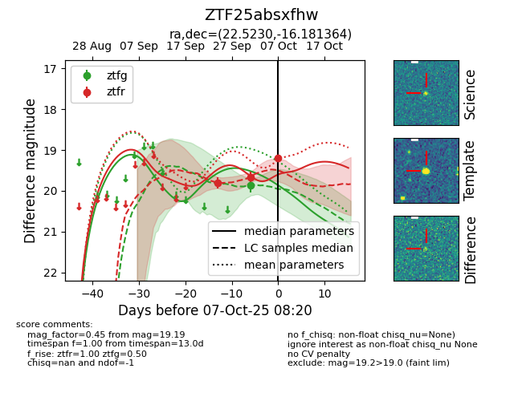
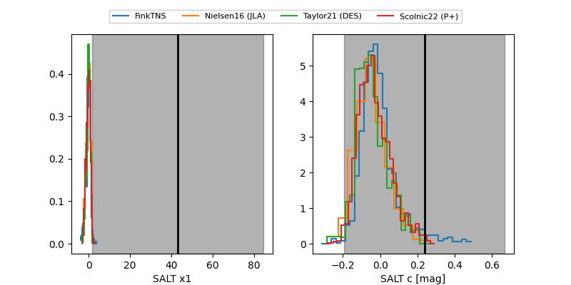

FINK: ZTF25absxfhw
Lasair: ZTF25absxfhw
ALeRCE: ZTF25absxfhw
ZTF25absxfhw (ztf,fink)
equatorial (ra, dec) = (22.5230,-16.18136)
galactic (l, b) = (164.2038,-75.85385)


last ztfg=19.86, ztfr=19.19
1 ztfg, 3 ztfr detections